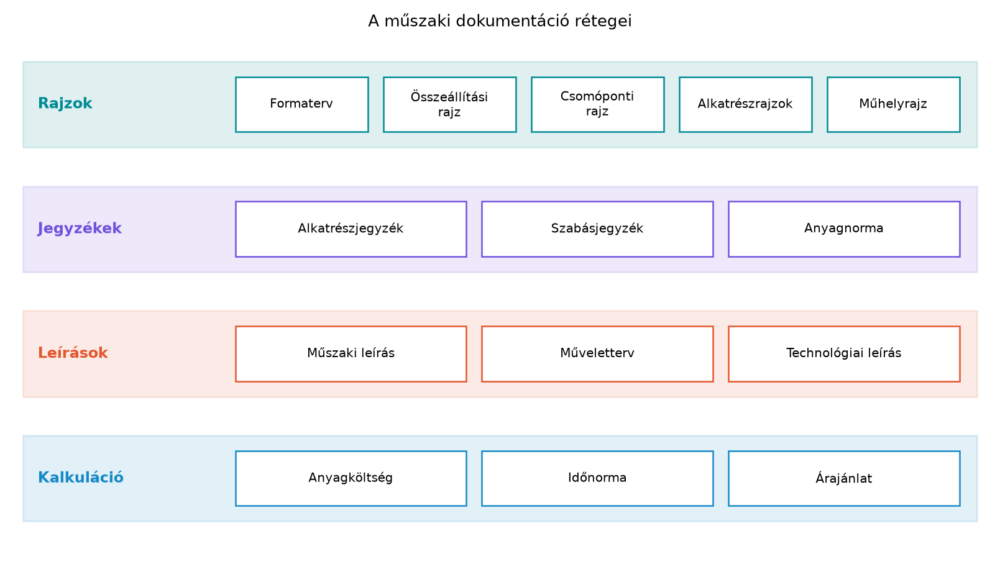

Egy asztalosműhelyben a megrendelő elfogadja a tervet, a műhely legyártja a bútort, majd a szerelésnél kiderül, hogy a fiók útban van a lábazati fűtéscső miatt. A rajzon nem volt jelölve a cső helye, a műhely pedig azt gyártotta le, amit látott. Ha a műszaki dokumentáció hiányos vagy ellentmondásos, a hiba a gyártás bármely lépésében anyag-, idő- és vevői bizalomvesztést okoz.
Ebben az alfejezetben azt tanulod meg, hogyan épül fel egy asztalosipari termék műszaki dokumentációja, milyen rajzok és jegyzékek tartoznak hozzá, és hogyan készíts alkatrészjegyzéket egy összeállítási rajz alapján. Ezt a tudást használod majd a Szabásjegyzék és anyagnorma alfejezetben, ahol a jegyzékből anyagszükségletet számolsz.
Képzelj el egy egyszerű falipolcot, amelyet bükk asztaloslapból készítünk. Megrendelői kérés: legyen 400 mm széles, 300 mm magas, 150 mm mély, fiók nélkül, két polclappal, hátul falra szerelhető. A látható felületek gyalultak, csiszoltak, a hátsó él süllyesztett hátlapot kap.
A polc hosszúsága (szélessége) 400 mm, a magasság 300 mm, a mélység 150 mm. Az oldallapok, a tető és a fenék 18 mm vastag bükk asztaloslapból készülnek. A két polclap a tető és a fenék között helyezkedik el, az oldallapok belső oldalába mart, 18 mm széles és 8 mm mély horonyban ül. A hátlap 6 mm vastag rétegelt lemez, amely az oldallapok belső oldalán, a hátsó éltől 10 mm-re mart, 6 mm széles és 8 mm mély nútba csúszik. A tetőlap és a fenéklap hosszúsága a két oldallap közötti belső méret: 400 mm − 2 × 18 mm = 364 mm. A polclapok hossza a horonyfenekek közötti méret: 364 mm + 2 × 8 mm = 380 mm; mélységük legfeljebb 150 − 10 − 6 = 134 mm lehet (a hátlap nútja előtt állnak meg), hézaggal 132 mm.
A rajzon ezeket a méreteket kell egyértelművé tenni a gyártó számára. A következőkben ezt a példát használjuk a dokumentáció részeinek bemutatására.

Az ábra rétegekre bontva mutatja, hogy a műszaki dokumentáció nem azonos a rajzkészlettel: a rajzok mellett legalább jegyzékek, leírások és kalkulációs lapok is vannak.
Definíció. A műszaki dokumentáció egy termék gyártásához, szereléséhez, ellenőrzéséhez és elszámolásához szükséges műszaki tartalmú dokumentumok összessége. Részei: rajzok, jegyzékek, műszaki leírások, technológiai leírások és kalkulációk.
Definíció. A rajzkészlet a dokumentáció rajzi része: azok a rajzok, amelyek a termék formáját, méreteit, szerkezetét és az alkatrészek kapcsolódását meghatározzák. A rajzkészlet hierarchiája a formatervtől a műhelyrajzig terjed.
Szabály. A rajzok és a jegyzékek adatainak mindig összhangban kell lenniük. Ha a rajzon megváltoztatsz egy méretet, a jegyzékben is át kell vezetned, és a változást a rajzfejben revízióval kell jelölnöd. A műhelybe csak az aktuális, érvényes rajz kerülhet.
Definíció. Az alkatrészjegyzék (műhelynyelven gyakran darabjegyzék) az összeállítási rajz alapján készített táblázat, amely tételszám, megnevezés, darabszám, anyagmegjelölés és méret szerint sorolja fel a termék valamennyi alkatrészét. A tételszám a rajzon bekeretezett szám, amely az alkatrészt a jegyzék megfelelő sorával köti össze.
Továbbvitt eredmény. A dokumentáció szerkezete itt válik ismertté. Ezt használjuk fel a Szabásjegyzék és anyagnorma alfejezetben: az alkatrészjegyzékből kiindulva készítünk szabásjegyzéket, anyagnormát és anyagkalkulációt. A műveletterv is erre a szerkezetre épül majd.
A dokumentációt négy nagy csoportra osztjuk:
A rajzkészlet tagjai:
A HTML-változatban a tételszámra vagy a jegyzék sorára mutatva az alkatrész és a sor együtt kiemelődik; a „B revízió” gomb egy módosított méret revíziófelhőjét és az új revízióbetűt mutatja.
Eljárás. Az alkatrészjegyzék készítésének lépései:
A kész méret a megmunkálás utáni, a gyártmányra előírt méret. A későbbi szabásjegyzékben ehhez adunk ráhagyást, és megadjuk a nyers méretet is. A jegyzékben a szerelt vasalatokat, tipliket, csavarokat és a felületkezelő anyagot nem alkatrészként, hanem külön sorokban vagy külön jegyzékben tartjuk nyilván.
Példa. A falipolc alkatrészjegyzéke az összeállítási rajz alapján:
| Tétel | Megnevezés | Db | Anyag | Kész méret h × sz × v (mm) | Megjegyzés |
|---|---|---|---|---|---|
| 1 | Oldallap | 2 | Bükk asztaloslap | 300 × 150 × 18 | Belső oldalon horony a polcokhoz, nút a hátlaphoz |
| 2 | Tetőlap | 1 | Bükk asztaloslap | 364 × 150 × 18 | Elölnézeti él lekerekítve |
| 3 | Fenéklap | 1 | Bükk asztaloslap | 364 × 150 × 18 | Elölnézeti él lekerekítve |
| 4 | Polclap | 2 | Bükk asztaloslap | 380 × 132 × 18 | Elölnézeti él lekerekítve, hátsó él egyenes |
| 5 | Hátlap | 1 | Rétegelt lemez | 380 × 264 × 6 | Nútba csúsztatva, nem csavarozva |
A táblázatban a h a hosszúság, a sz a szélesség, a v a vastagság. A sorrend hossz × szélesség × vastagság, minden méret mm-ben.
Ellenőrző számítás. - Oldallap hossza = a kész bútor magassága: 300 mm. - Tető- és fenéklap hossza = belső szélesség: 400 − 2 · 18 = 364 mm. - Polclap hossza = belső szélesség + 2 · horonymélység: 364 + 2 · 8 = 380 mm; szélessége: 150 − 10 − 6 − 2 = 132 mm (2 mm hézag a hátlap nútja előtt). - Hátlap magassága = a tető alsó éle és a fenék felső éle közötti méret: 300 − 2 · 18 = 264 mm; szélessége az oldallapok nútjába nyúlva 364 + 2 · 8 = 380 mm.
Szabvány. A rajzokra, a tételszámokra és a rajzfejre vonatkozó szabványok közül a hazai gyakorlat az MSZ EN ISO 7200 szabványt (rajzfej adatmezői) és az MSZ EN ISO 128, MSZ EN ISO 129 ábrázolási és méretmegadási szabványokat használja. A tételszámok elrendezésére az MSZ EN ISO 6433 jellegű szabványok adnak útmutatást (ellenőrizendő: a pontos szabványjelölések és hatály). A rajzfej tartalma: rajzszám, megnevezés, anyag, méretarány, rajzoló, ellenőrző, dátum, revízió. A tételszámot a rajzon bekeretezve, vezetővonallal az alkatrészhez kapcsolva adjuk meg, a jegyzékben ugyanaz a szám szerepel.
A rajzszám a dokumentum egyedi azonosítója.
Vállalatonként eltérő lehet, de mindig egyértelműnek kell lennie. Példa:
FP-2025-01-A, ahol FP a termék jele
(falipolc), 2025 az év, 01 a sorszám,
A a revízió. A tanulói vizsgaremeknél elegendő a tanuló
neve, a vizsgaazonosító vagy a termék neve, és a dátum – ellenőrizendő a
hatályos vizsgakövetelmény.
Definíció. A revízió (változat) a
rajz módosításának jelölése. Az első kiadás jellemzően A
vagy 0, minden lényegi változtatás után új betű vagy szám
következik. A revíziót a rajzfejben rögzítik, és a módosított mezőt is
megjelölik a rajzon (például revíziófelhővel vagy a méret melletti
betűjellel). A régi revíziójú papíralapú rajzot vissza kell vonni, vagy
„ÉRVÉNYTELEN” jelöléssel kell ellátni, nehogy a műhelyben tévedésből azt
használják.
Szabály. A műhelynek kiadott rajzon mindig az aktuális revíziónak kell szerepelnie. A gyártást végző asztalos csak a neki kiadott, aláírt, keltezett rajz alapján dolgozhat. Ha a rajzon javítás szükséges, azt a rajzoló írja át, majd új revízióval adja ki. A műhelyben tilos radírozni, átírni vagy „fejből” módosítani.
A szakmai vizsgán a vizsgaremek dokumentációja általában a következőket tartalmazza – a pontos, hatályos előírást mindig a vizsgaszabályzat és a kiadott feladat tartalmazza (ellenőrizendő):
A dokumentációt ugyanúgy ellenőrizni kell, mint a készterméket. Az ellenőrzés lépései:
Az ellenőrzést a rajzoló után egy másik szakember végzi. Az ellenőrzött rajzot aláírással és dátummal kell érvényesíteni. Az eltéréseket a rajzon vagy a jegyzékben javítani kell, és új revíziót kiadni.
Egy asztalosműhely konyhabútort gyártott. A megrendelő a szerelés előtt kérte, hogy a hűtő feletti szekrény mélysége 10 mm-rel rövidebb legyen, mert a hűtő kilóg a munkalap alól. A tervező átvezette a változást a rajz B revíziójában, de a műhelyben a régi A revízió volt kitéve a gépre. A szekrény a régi mélységgel készült el. A szereléskor derült ki a hiba. A hibás szekrényt újra kellett gyártani, a vevő pedig csúszást szenvedett. A tanulság: a rajzkiadás rendje éppoly fontos, mint a rajz pontossága.
Válaszolj röviden, majd nézd meg a Megoldások elején az „Önellenőrzés – válaszok” részt.
1. feladat (A). Sorold fel a műszaki dokumentáció négy fő részét, és mindegyikhez írj egy-egy konkrét dokumentumot.
2. feladat (A). Mi az alkatrészjegyzék öt kötelező oszlopa? Írd le a méretmegadás sorrendjét és mértékegységét.
3. feladat (B). Egy falipolc összeállítási rajza alapján készíts alkatrészjegyzék-táblázatot. A rajz adatai: két oldallap 300 × 150 × 18 mm bükk asztaloslap; egy tetőlap 364 × 150 × 18 mm; egy fenéklap 364 × 150 × 18 mm; két polclap 380 × 132 × 18 mm; egy hátlap 380 × 264 × 6 mm rétegelt lemez. Adj minden tételnek tételszámot, és írd be a darabszámot.
4. feladat (B). Egy rajz aktuális revíziója
B. A rajzoló módosítja a tetőlap hosszát 364 mm-ről 360
mm-re. Hogyan jelölöd a változást a rajzon és a rajzfejben? Írd le a
helyes eljárást lépésenként.
5. feladat (C). Egy asztalos műhelyben a dolgozó a
falon lógó, A revíziójú rajzból dolgozik, míg az irodában
már a B revízió van. Milyen hibákhoz vezethet ez? Tegyél
javaslatot a dokumentumkezelés javítására.
6. feladat (D). Egy falipolc alkatrészjegyzékét a műhelyben úgy módosították, hogy a polclap hosszát 380 mm-ről 364 mm-re írták át, de a rajzot nem javították. Milyen következménye lesz a gyártásban? Hogyan javítanád a folyamatot, hogy ez ne forduljon elő?
Önellenőrzés – válaszok
1. feladat. A négy rész: rajzok (pl. összeállítási rajz), jegyzékek (pl. alkatrészjegyzék), leírások (pl. műveletterv), kalkuláció (pl. árajánlat).
2. feladat. Az oszlopok: tételszám, megnevezés, darabszám, anyag, méret. A méretmegadás sorrendje hossz × szélesség × vastagság, mm-ben.
3. feladat. A táblázat:
| Tétel | Megnevezés | Db | Anyag | Kész méret h × sz × v (mm) |
|---|---|---|---|---|
| 1 | Oldallap | 2 | Bükk asztaloslap | 300 × 150 × 18 |
| 2 | Tetőlap | 1 | Bükk asztaloslap | 364 × 150 × 18 |
| 3 | Fenéklap | 1 | Bükk asztaloslap | 364 × 150 × 18 |
| 4 | Polclap | 2 | Bükk asztaloslap | 380 × 132 × 18 |
| 5 | Hátlap | 1 | Rétegelt lemez | 380 × 264 × 6 |
4. feladat. A rajzon a módosított méretet be kell
írni, a változást revíziófelhővel vagy más jelöléssel megjelölni. A
rajzfejben a revíziót C-re kell módosítani, a módosítás
dátumával és a rajzoló nevével. A régi B példányokat vissza
kell vonni vagy érvényteleníteni. A jegyzéket is frissíteni kell.
5. feladat. A dolgozó rossz mérettel gyártja le az
alkatrészt, mert a B revízióban megváltozott valamelyik
méret vagy anyag. A javaslat: csak az irodából nyomtatott, aktuális
revíziójú rajz kerülhet a műhelybe; a kiadott rajzokról naplót kell
vezetni; a régi rajzokat „ÉRVÉNYTELEN” jelöléssel el kell
különíteni.
6. feladat. A polclap a hornyok nélkül 364 mm hosszú lesz, ezért a 8 mm mély hornyokba nem nyúlik be, a polc laza lesz, vagy kiesik. A hiba oka: a műhelyben a jegyzéket javították, de a rajzot nem, és a rajzot sem revíziózták. A folyamat javítása: minden méretváltozást a rajzon kell átvezetni, revíziót kiadni, és a jegyzéket ennek megfelelően frissíteni; a műhelyben a jegyzéket nem szabad önállóan módosítani.
A műszaki dokumentáció négy fő részből áll: rajzok, jegyzékek, leírások és kalkuláció. A rajzkészlet a formatervtől a műhelyrajzig terjed, és minden rajz meghatározott feladatot lát el: a formaterv a megjelenést, az összeállítási rajz a szerkezetet és a tételszámokat, a csomóponti rajz a kritikus kapcsolatot, az alkatrészrajz az egyedi alkatrészt mutatja. Az alkatrészjegyzék tételszám, megnevezés, darabszám, anyag és kész méret (hossz × szélesség × vastagság, mm) szerint listázza az alkatrészeket. A rajzszám és a revízió egyértelművé teszi a változatkezelést; a műhelybe csak az aktuális, aláírt, keltezett rajz kerülhet. A vizsgaremek dokumentációja a rajzok mellett jegyzékeket, művelettervet, kalkulációt és műszaki leírást tartalmaz. Ezt a szerkezetet használjuk tovább a szabásjegyzék és anyagnorma készítésénél.
Forrástípusok: magyar és európai rajzi szabványok (MSZ EN ISO 128, 129, 7200; tételszámok – pontos szabványok ellenőrizendő), faipari szakrajzi tankönyvek, a szakképzési vizsgakövetelmények. Ellenőrizendő: a pontos rajzszabvány-számok és hatály, a vizsgaremek dokumentáció kötelező elemeinek hatályos listája, a vállalati rajzszámrendszer és revíziójelölés (üzleti gyakorlattól függő). A méretek a szövegben tanulási példák, nem helyettesítik a konkrét termék rajzának pontos méretezését.